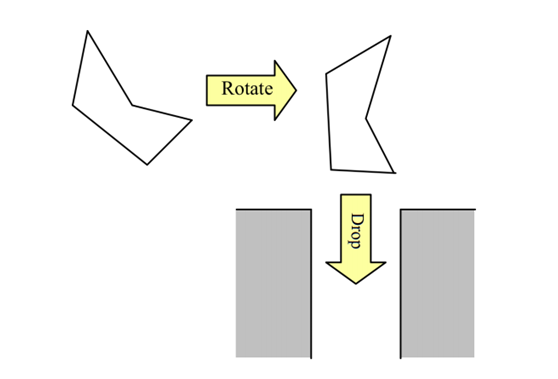

Allied Chute公司是一个建造垃圾管道的公司。垃圾管道建造在楼房中，垃圾从顶部进入，顺着管道与地下室连接。建造垃圾管道是一个高水平的工作。根据人们丢入不同种类的垃圾，垃圾管道需要有一个适当的尺寸。并且由于制作垃圾管道的费用正比于它的尺寸，公司总是想要建造尽可能的管道，尽管确定合适的尺寸十分困难。
为了简化这个问题，我们考虑一个二维的空间。垃圾管道是一个有着固定宽度、垂直下降的槽。物体可以看作一个多边形的模型。在物体落入管道之前它可以旋转来达到和管道最佳拟合。当它下落时，它会垂直落下并且不再旋转。下图展示了一个垃圾是怎样旋转来符合管道的。
你的任务是计算让一个给定的多边形物体通过的最小管道宽度。
